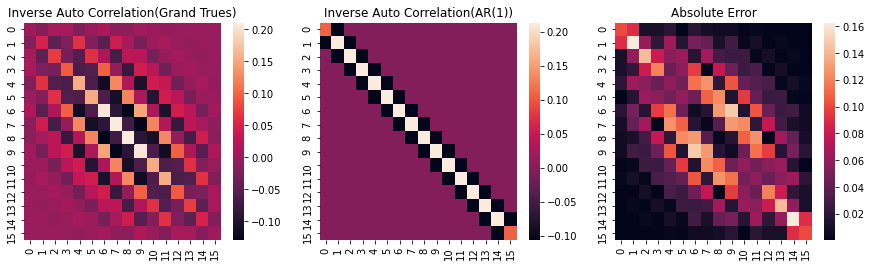
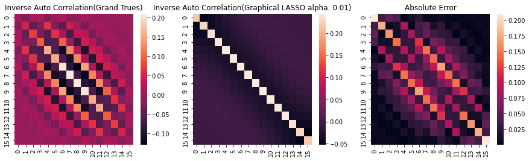

\begin{equation*}
\newcommand\ve[1]{\boldsymbol{#1}}
\newcommand\mean[2]{\mathrm{E}_{#1} \left[ #2 \right]}
\end{equation*}
追加調査。今日まで見てみてなさそうであれば追加実験に入る。実信号のパフォーマンスが気になっている。
- Autoregressive Processes in Time 前にもみたけどもう一度挙げる。本質的な指摘はここでされている。論文があってもおかしくない。
- 自己共分散行列の逆の解釈もされているから、目を通すべきか。
- Simplified Newton-Type Adaptive Estimation Algorithms これもほぼ同じことを言ってる。少なくとも入力データをAR(p)と見做すという仮定は全く同一。精読がいる。通しで軽く読んでみた。うーん、再帰的に \(R^{-1}\) に該当する行列を求めているようで、効率が良さそう。
- Fast Newton transversal filters-A new class of adaptive estimation algorithms その筆者がFNTFとして提案した論文。
- Fast LMS/Newton Algorithms Based on Autoregressive Modeling and Their Application to Acoustic Echo Cancellation 昨日挙げた論文。
- やっぱり陽に逆行列を求めてはいないように見える。（むしろ、 \(R^{-1}x\) を直接推定することに重きがある）
- 格子フィルタで再帰的に行列要素を求めているのは大変参考になる。 定数倍除きあってればいいので、いまやろうとしていることに組み込めないか？
- 実験でFNTFを叩いてる。収束が極端に遅くなるケースがある、とのこと。特に特性が急に変わるケース。多分 \(R^{-1}\) が適応できてないんだと思ふ。
まとめ。近いこと言ってると思うんだけど、どの論文もなぜか \(R^{-1}\) がn重対角行列であることを指摘していない。もう、結果まとめて上に回そう。
追加実験:
分散は入力データ全体を見て計算し、更新しない。
i.i.d.のときの性能はLMSと一致するか
- 一致を確認。ついでに \(R^{-1}\) が単位行列に近くなっていることも確認。
相関を変えたときの性能はどうか
- LMSより優位に収束が早くなる。
- 定常誤差が少し持ち上がる。←相関を上げると顕著。行列要素が大きくなり、勾配もでかくなっていると想像。
- LMSより安定した学習曲線になっているように見える←要観察。前サンプルを使っているのが功奏している？
相関付き雑音でフィルタ次数を変えたときはどうか
- 2は当然早い（降下時SAより早いのが気になった。また、NLMSは暴れ気味）
- 大きくしていくと定常誤差が大きくなっていく。同時に、NLMSの収束が遅くなっている
- 50で完全にNLMSより収束が早い。
- 100でLMSは発散、AR(1)はNLMSより早く収束。ただし定常誤差は悪目。
- 500ではLMSもろとも発散した。学習係数設定が悪そう。→0.01から0.001にしたらちゃんと収束する方向に進んだ。ちゃんと固有値解析すれば収束条件が得られるはず。
実データでLMSより良くなるか
- ステップサイズを大きく取ると発散する。
- 小さく取ればNGSAに近い性能。
実データでの \(R^{-1}\) も対角優位になってるかチェックしとく。
なっていなそう。 行列の中心が最大で、それから端っこに行くに従って小さくなる。
これはどう説明できるだろうか。AR(p)のpを増やせばいくらか中心を大きく持っていけるが、MA要素もあるとしか。
glassoと近いのはポジれる。
glassoと近く、スパースな \(R^{-1}\) で計算できているのは理想的であると考える。
明日以降、学習曲線の追加実験を行っていく。 また、以前計算を投げてしまった事項が気になっている。AR(1)の \(R^{-1}\) は単位行列+対称行列の形に表せる。これとベクトルの積はどういった意味があるのか。幾何学的意味も含めて少し考えてみたい。